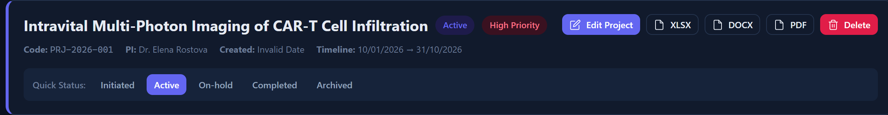
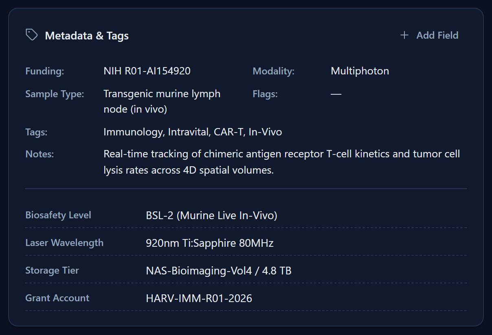
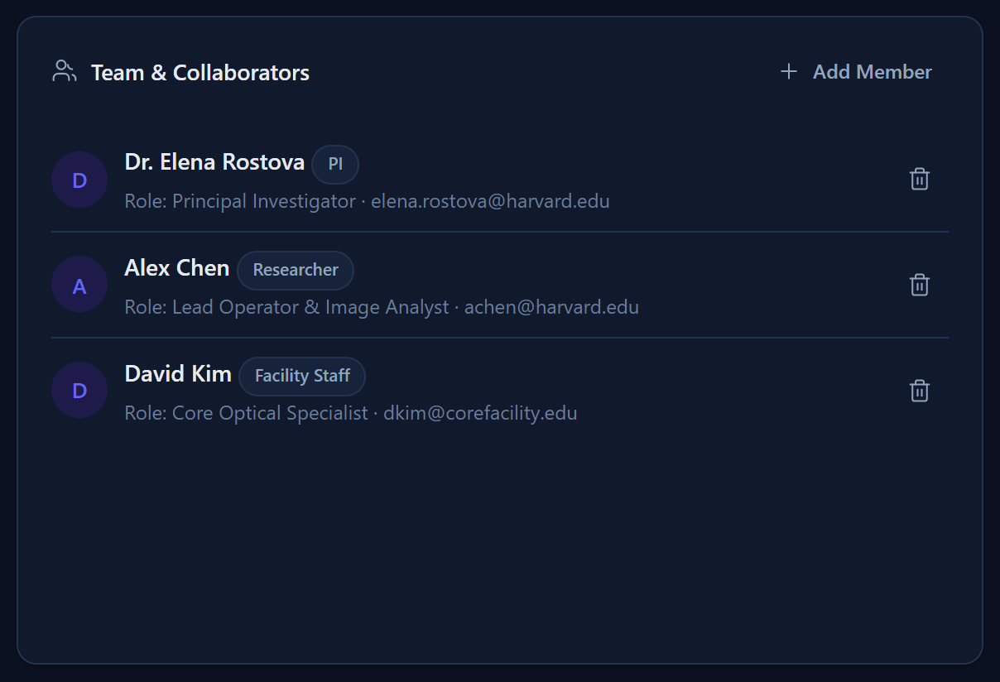
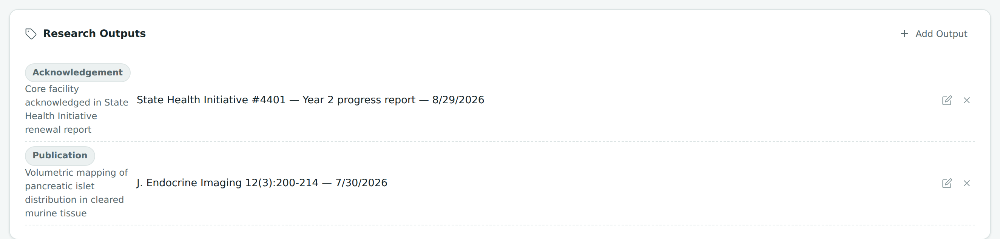

Chapter 4
Projects
Create, organize, and maintain the projects your facility works on — from first setup through archiving when the work is done.
What you'll be able to do
- Create a new project, including registering its PI on the spot if they're not in the system yet
- Read and change a project's code, status, and quick-status bar, and add your own custom statuses
- Add metadata, tags, and custom fields to keep track of anything the built-in fields don't cover
- Build a project's team, and manage its files and links
- Log a project's research outputs — publications, acknowledgements, datasets, and more
- Duplicate a project to reuse its setup for similar work
- Archive a finished project (and restore it later), and know when a true delete is offered instead
Creating a project
- Click New Project — it's available from the sidebar footer and from the top of the Projects registry.
- Type a Title. This is the only field that's required.
- Choose the PI (Principal Investigator) from the existing list of people, or register a brand-new one right there — see Registering a new PI inline below.
- Fill in whatever else applies: modality, funding source, sample type (each a dropdown built from existing values, plus "+ Add New" — see "Other" really means "Add New"), a grant to bill it against (picked from the grants you've set up in Settings — leave it as "No Grant" if there isn't one yet), flags such as At-risk / Blocked / Needs-review, start and end dates, tags, and notes.
- Click Save. The project appears in the registry immediately, with an auto-generated project code.

🔍 Why it works this way. Only the title is required so you can create a placeholder project the moment work is discussed, then fill in the rest as details firm up — you're never blocked from starting a record just because you don't yet know the funding source.
Registering a new PI inline
If the project's PI isn't already in your People & Labs directory, you don't need to leave the New Project form to add them.
- On the New Project form, open the PI picker.
- Choose the option to register a new person instead of picking an existing one.
- Type their first and last name and save — they're added to your People directory on the spot.
- Continue filling out the rest of the project as normal.
🔍 Why it works this way. A brand-new project is often exactly when you meet a brand-new PI — requiring you to go create their person record first, then come back to the project form, would just be a detour. The PI you register or pick here is automatically added to the project's team with the role "Principal Investigator," so you don't have to add them a second time in Team.
💡 Tip. This inline registration only fills in a name. To add the PI's lab, email, or hourly rate, open their full record afterward from People & Labs.
Project codes
Every new project gets a code automatically, in the form PRJ-YYMM-NNN — the year and month it was created, followed by a sequence number that restarts each month. So the third project created in April 2026 would be coded PRJ-2604-003.
🔍 Why it works this way. An automatic, sortable code means every project gets a unique, consistent identifier without anyone having to invent or remember one — and the month embedded in it makes it easy to tell roughly when a project was opened just from its code.
- Open a project and click Edit.
- The Code field is editable — change it if your facility has its own naming convention you'd rather use.
- Save. The code you typed replaces the auto-generated one everywhere the project is shown.
💡 Tip. The Projects registry search box matches against the code as well as the title, PI, funding source, modality, sample type, tags, and notes — so a well-chosen code also becomes a fast search shortcut.

The quick-status bar
Every project detail page shows a row of status buttons — its quick-status bar — so you can move a project from one stage to the next without opening an edit form.
- Open any project's detail page.
- Find the row of status buttons near the top.
- Click the status you want. It's applied immediately — one click, no separate save step.

🧪 Try it. Open one of the sample projects and click through a couple of statuses on its quick-status bar. Then check the Projects registry — its Status filter and the badge next to the project's name update to match immediately.
Adding a custom status
If none of the built-in statuses describes your workflow, you can add your own.
- On the quick-status bar, click + Add Status.
- Type the new status name and save.
- It's now available on the quick-status bar for every project, not just this one, and appears in the Projects registry's Status filter.

🔍 Why it works this way. Statuses are a shared vocabulary across your whole facility (the same idea behind "+ Add New" everywhere else), so adding one benefits every project rather than being locked to the project you happened to be looking at when you added it.
Metadata and tags
Beyond the built-in fields, a project carries free-text tags (short labels you can search and filter by) and can hold any number of custom metadata fields — see Custom fields below for those.
- Open a project and click Edit.
- Find the Tags field and add or remove short labels — anything meaningful to your facility (e.g. "grant-funded," "priority," an equipment name).
- Save. Tags now show on the project's card in the registry and are searchable there.

🔍 Why it works this way. Tags are meant to be quick and searchable, while custom fields (next section) are meant to hold a specific labeled value — the two cover different note-taking needs without forcing every project into the same rigid template.
Custom fields
Custom fields let you record project-specific information the built-in form doesn't have a place for — a grant number, an IRB approval code, a collaborating institution, anything at all.
- Open a project's detail page and find the custom fields area (shown together with tags, above).
- Click to add a field, type a label (the key) and its value, and save.
- To change one later, edit it in place; to remove one, delete it — you'll be asked to confirm first.

🔍 Why it works this way. Every facility tracks a slightly different set of details per project. Rather than the app guessing which fields you need, custom fields let each project carry exactly the extra information that matters for it, with no limit on how many you add.
💡 Tip. Custom fields are one of the things a duplicated project keeps — handy for a series of similar projects that all track the same extra details.
Team
A project's team is the roster of people working on it, each with a role (the PI you picked or registered when creating the project is added here automatically as "Principal Investigator").
- Open a project's detail page and find its Team section.
- Click to add a member: pick an existing person from People & Labs and type their role on this project.
- To remove someone from the team, use the remove action next to their row — this only takes them off this project's team, it does not touch their person record or any other project.

🔍 Why it works this way. A person can be on several projects at once with a different role on each — a postdoc might be "Lead" here and "Consultant" there. Keeping roles per-project (rather than one fixed role on the person) lets that reflect reality.
💡 Tip. Adding someone to a project's team is separate from adding them to a specific booking as an attendee or facility staff — see Facility Staff vs. attendees and Booking a Session.
Research outputs
A project's Research Outputs list is where you record what the project actually produced — separate from its files (below), which are the working documents and links you keep along the way.
- Publication — a paper, poster, or preprint that came out of the work.
- Acknowledgement — a mention or thank-you for the facility's help in someone else's paper, grant report, or renewal.
- Dataset — a deposited dataset, raw or processed, that the project's imaging produced.
- Other — anything that doesn't fit the three above.
- Open a project's detail page and find its Research Outputs card.
- Click Add Output, choose a Type, and type a Title — both are required.
- Optionally add a Reference (a journal citation, a DOI, a grant report title — whatever points back to the actual thing), a Date, and a Note.
- Save. To change an output later, use its edit action; to remove one, delete it — you'll be asked to confirm first.

💡 Tip. The Date field is optional. If you leave it blank, the output doesn't drop to the bottom of the list — it sorts by the day you logged it instead, right alongside dated outputs from around the same time. Fill in the Date when you know it (e.g. a paper's actual publication date); leave it blank for something you're logging as it happens.
Research outputs aren't only visible here. They also feed the Funnel: Consult to Output card on the Reports & Utilization screen — a project's first output is what counts as reaching the funnel's final stage — and they're included whenever you export a project (XLSX, DOCX, or PDF), plus in their own "Research Outputs" sheet in the facility-wide spreadsheet from the Projects registry's Export All button. See Backups, Restore & Exports.
🔍 Why it works this way. Bookings and milestones tell you a project is active; outputs are the point of it all — proof that the work actually went somewhere. Keeping a dedicated, typed record of that (rather than a line in the notes field) is what lets the funnel and the exports count it consistently.
Files and attachments
A project can hold both uploaded files and web links, side by side in one list.
- Open a project's detail page and find its files/attachments section.
- To add a file, use the upload option and choose a file from your computer.
- To add a link instead, choose the link option and paste a web address (starting with
http://orhttps://). - Use the download action on a row to get an uploaded file back out, or the delete action to remove a row — deleting asks for confirmation first.
⚠️ Careful. Only web links (starting with http:// or https://) are clickable in this list. A link typed without that prefix, or any other kind of reference, is stored as text but won't open when clicked.
🔍 Why it works this way. Uploaded files are stored inside the same private, per-browser storage as the rest of your data (see Your data lives here) — which means they're included automatically when you export a backup. That's a real convenience (one file captures everything), but also a real size consideration: a project with many large uploads makes for a large backup file. See Backups, Restore & Exports.

Duplicating a project
Duplicating gives you a fresh copy of a project's setup, ready for new work, without repeating all the data entry.
- Open the project you want to copy and find its Duplicate action.
- Confirm. A new project appears named "original title (Copy)."
- Open the new copy and adjust whatever needs to change — its title, dates, and status are the first things worth checking.
| Copied to the new project | Deliberately NOT copied |
|---|---|
| Basic fields (funding, modality, sample type, notes, tags) | Meetings / bookings |
| Team roster | Files and attachments |
| Assigned instruments | Start/end dates (cleared) |
| Custom fields | Grant |
| Milestones (statuses reset to pending, due dates cleared) | Research outputs |
| Service entries |
The new copy always starts with the status "Initiated," regardless of what the original's status was.
🔍 Why it works this way. Duplicating is meant for reusing a project's setup — its team, its milestone plan, its instrument list — for a new round of similar work, not for cloning its history. Bookings and files are specific to what already happened on the original project, so copying them into a brand-new project would misrepresent history that belongs only to the original. That's the same reasoning behind why costs are frozen and why bookings are cancelled, not deleted — history stays with the record it actually happened on.
🧪 Try it. Duplicate one of the sample projects, then compare its Milestones tab with the original's — the milestone titles are identical, but every due date is empty and every status has reset to pending, ready for you to plan afresh. See Milestones.
Archiving and restoring a project
- Open the project you want to archive and find its Archive action.
- Read the dialog carefully: if the project has any history at all — team members, instruments, milestones, bookings, service entries, files, custom fields, or research outputs — it lists everything the project holds, including its total billed amount, before you confirm.
- Confirm. The project is archived: it disappears from the dashboard and the main registry, and gets a clear "Archived" banner on its own detail page.
- To bring it back, open it (use the registry's Show archived toggle to find it) and click Restore.


🔍 Why it works this way. Archiving is the project-level version of the same idea covered in Retire vs. delete and Archive: cost history and milestone history are real facts you don't want to lose just because a project wound down. Archiving keeps them all, while still keeping your everyday project list focused on live work.
When a true delete is offered instead
If a project has absolutely nothing on it yet — nobody on the team at all — including no PI, since choosing one puts that person on the project and that already counts as history — no instruments, no milestones, no bookings, no service entries, no files, no custom fields, no research outputs — the same action offers a genuine, permanent Delete instead of archiving. Use this only for a project created by mistake or as an empty duplicate that turned out unneeded.
⚠️ Careful. There is no undo for a true delete. If you're not certain a project truly has zero history, archive it instead — you can always restore an archived project, but a deleted one is gone for good.
Check yourself
You create a new project for a PI who isn't in your People directory yet. Do you need to add them as a person first?
No — the New Project form lets you register a new PI by name right there. They're added to your People directory and to the project's team as "Principal Investigator" automatically.
You duplicate a project that has 12 bookings and 3 uploaded files. How many bookings and files does the new copy start with?
Zero of each. Duplicating deliberately does not copy meetings/bookings or files and attachments — only the setup (fields, team, instruments, custom fields, and milestones with statuses and due dates reset).
You try to archive a project and the dialog offers to permanently Delete it instead. What does that tell you?
That the project has zero references anywhere — nobody on the team, not even a PI, no setup, no instruments, milestones, bookings, files, custom fields, or research outputs. A true delete is only ever offered when there's no history to protect; anything with history gets archived instead.
You log a research output but don't know its exact date yet, so you leave the Date field blank. Does it sink to the bottom of the project's output list?
No. An output with no date sorts by the day you logged it, not by an empty value — so it lands with the other recent entries instead of falling to the end of the list.